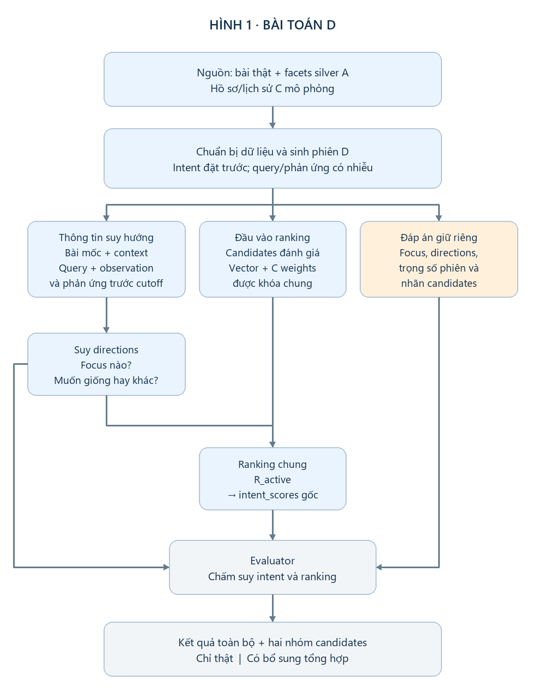
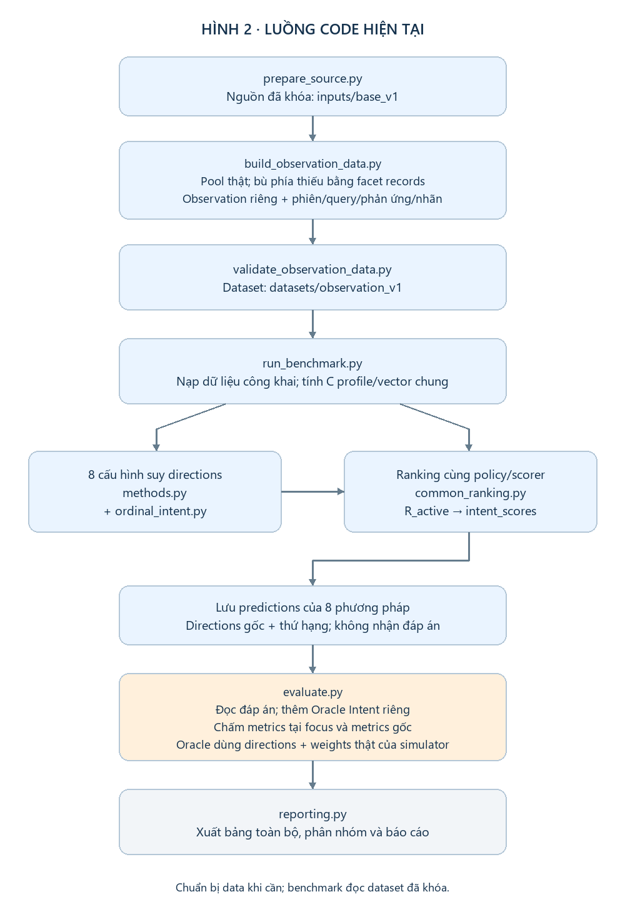

Thực nghiệm D — hiểu bài toán và đọc kết quả
Một benchmark · tám phương pháp · một bảng kết quả chính. Oracle là mốc dùng đáp án ẩn. Các phân nhóm là cách đọc thêm cùng kết quả, không phải các thực nghiệm mới.
1. D kiểm tra điều gì?
- Query/phản ứng có giúp suy nhu cầu giống–khác không?
- Nhu cầu suy được có giúp xếp bài phù hợp lên trên không?
Ví dụ: đang đọc bài về gợi ý bài báo khi thiếu lịch sử người dùng. Context là task “gợi ý bài báo”; focus là problem. Muốn giống problem thì ưu tiên bài cũng xử lý thiếu lịch sử; muốn khác problem thì ưu tiên bài xử lý problem khác nhưng vẫn cùng task.
2. Dữ liệu và hình tổng quát

- Candidates: những bài cần xếp hạng. Ưu tiên bài thật, tổng hợp phía còn thiếu.
- Observation: các cặp riêng để tạo phản ứng trước cutoff; tách khỏi candidates đánh giá.
- Hidden intent/labels: simulator đặt nhu cầu và nhãn trước; chỉ evaluator/Oracle được dùng làm đáp án.
Bộ datasets/observation_v1 có 19 thiết kế trên 12 bài mốc. Mỗi thiết kế tạo 2 hướng × 3 chế độ query → 114 phiên; lặp với 3 seeds × 2 mức nhiễu phản ứng.
15 thiết kế dùng pool 20 candidates thật; 4 thiết kế dùng 19 thật + 1 tổng hợp. “4” là số thiết kế, không phải cả nhóm chỉ có bốn bài. Observation/query/phản ứng vẫn là mô phỏng ở cả hai nhóm.
Mỗi pool có một candidate đúng context và đúng hướng (grade 2), một candidate đúng context nhưng sai hướng (grade 1) và 18 bài ngoài context (grade 0). Hai nhu cầu đối lập giữ cùng pool.
3. Code chạy và phương pháp khác nhau ở đâu?

Các phương pháp thay phần suy directions:
- Bốn baseline gốc: fixed_similar (luôn giống, weights đều), profile_similar (luôn giống, weights C), DELTA (chỉ phản ứng), DELTA + query.
- Đối chứng bổ sung: QUERY-ONLY, VOTE, BAYES-H và Ordinal-Intent. Tất cả không train.
- Oracle Intent: evaluator dùng directions và trọng số phiên đúng; không phải phương pháp thực tế để chọn thắng.
DELTA lấy chênh lệch phản ứng phía khác − phía giống. Tổng chênh lệch chia cho (số cặp + 2); đủ hai cặp và độ lớn ≥ 0,25 thì suy hướng. Dương → different, âm → similar; chưa rõ → unknown. DELTA + query bổ sung quy tắc query rõ.
Ranking chung gồm hai bước:
- R_active: suy được duy nhất một focus → giữ context/focus, bỏ facet khác; chưa rõ → fallback always-similar. Không dùng focus thật.
- intent_scores gốc: similarity cosine là S; similar dùng S, different dùng 1−S. Điểm là Σ(weight × term) / Σweight trên facets đang dùng. Không đạt context hoặc candidate thiếu facet active có weight → −1; anchor thiếu thì bỏ facet; hết weights dùng cosine context; hòa theo ID.
Ví dụ weights task/problem = 0,6/0,4: A có cosine (0,90; 0,95), B có (0,85; 0,20). Muốn giống problem: A=0,92 > B=0,59. Muốn khác: B=0,83 > A=0,56. Đổi hướng làm đổi thứ tự.
Vectors/candidates dùng chung; ngoài fixed_similar, các method dùng cùng C weights. Directions ban đầu được giữ để chấm: fallback ranking không được tính là suy đúng hướng.
4. Một bảng kết quả
| Phương pháp | Accuracy | F1 | Coverage | nDCG@10 | C@5 | C@10 |
|---|---|---|---|---|---|---|
| fixed_similar | 50,00% | 0,3333 | 100,00% | 0,8029 | 0,1722 | 0,0903 |
| profile_similar | 50,00% | 0,3333 | 100,00% | 0,8019 | 0,1722 | 0,0903 |
| QUERY-ONLY | 33,33% | 0,5000 | 33,33% | 0,8623 | 0,1815 | 0,0935 |
| DELTA | 95,83% | 0,9734 | 96,80% | 0,9597 | 0,1981 | 0,0993 |
| DELTA + query | 96,91% | 0,9793 | 97,84% | 0,9632 | 0,1985 | 0,0995 |
| VOTE | 91,74% | 0,9545 | 92,05% | 0,9523 | 0,1962 | 0,0988 |
| BAYES-H | 91,51% | 0,9533 | 91,82% | 0,9518 | 0,1962 | 0,0988 |
| Ordinal-Intent | 81,13% | 0,8934 | 81,13% | 0,9374 | 0,1940 | 0,0979 |
| Oracle — đặc quyền | 100,00% | 1,0000 | 100,00% | 0,9862 | 0,2000 | 0,1000 |
Đọc cột: Accuracy/F1/Coverage chấm tại focus; unknown tính sai trong accuracy. nDCG đo thứ hạng, không phải phần trăm đoán đúng. C@K là Compliance@K = số grade 2 trong top K / K; một grade 2/phiên nên trần C@5=0,20 và C@10=0,10.
Bảng dùng trung bình theo thiết kế rồi nhóm bài mốc. Metrics gốc tính cả context + focus và toàn bộ Recall/Precision/MRR được giữ trong báo cáo đầy đủ; không trộn hai định nghĩa vào bảng này.
5. Nói được gì từ bảng này?
- Phản ứng giúp suy hướng: DELTA 95,83% so với mốc luôn similar 50%. Thêm query tăng lên 96,91%.
- Intent giúp ranking: DELTA + query có nDCG 0,9632 so với profile_similar 0,8019, và đưa bài đúng nhu cầu lên hạng 1 ở 94,56% phiên. Hiệu quả bao gồm suy scope và hướng.
- DELTA + query gốc vẫn tốt nhất trong tám phương pháp. Các method bổ sung chưa thắng. Oracle dùng đáp án ẩn nên được đọc riêng.
Chỉ xét nhóm candidates thật, nDCG cũng tăng 0,7537 → 0,9483. Đây là phân nhóm từ cùng lượt chạy, không cần thêm một bảng thực nghiệm trong bản ngắn.
Phạm vi: kết quả hỗ trợ hai luận điểm trong mô phỏng có kiểm soát. Chỉ 12 bài mốc, query/cặp khá thuận lợi và phần lớn candidates ngoài context; chưa xác nhận trên người dùng thật hoặc test nội dung độc lập.
Nguồn: lượt chạy complete, 5.472 public predictions + 684 Oracle. Chạy lại từ thư mục experiments bằng python -B scripts/exp_d/proposal/run_benchmark.py.